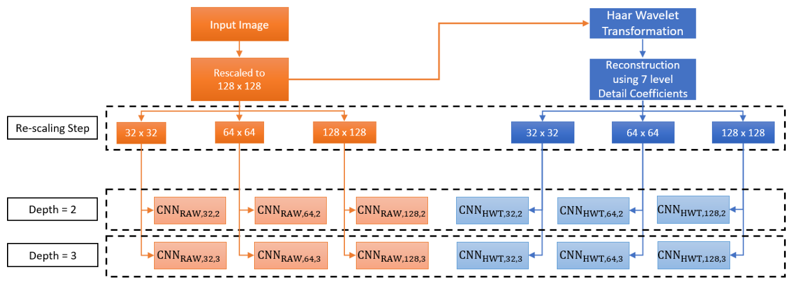
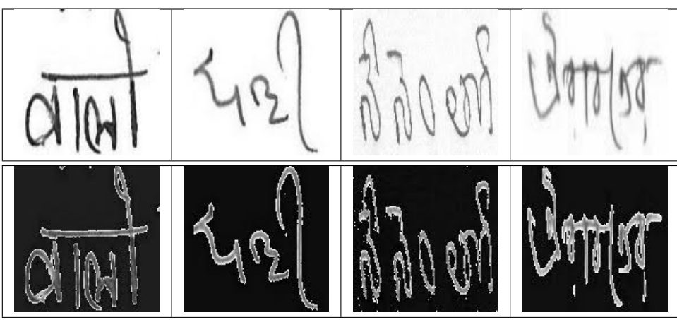

Telling eleven handwritten Indian scripts apart with a team of small neural networks
A bank cheque or a postal card in India can mix several scripts on one page. Before software can read such a document, it has to know which script each word is written in. We tackled that for eleven Indian scripts with a team of small convolutional neural networks (CNNs), instead of one big network, so that the whole thing trains on a cheap graphics card.
The problem
India has many scripts, and they share ancestry, so many letter shapes look alike. Handwriting makes it harder: pens differ, writers differ, and the same writer changes from day to day. Doing this for a whole page is too coarse, because one page can change script from line to line or even word to word. So we worked on single words.
We used the public PHDIndic_11 collection: 11,000 word images, 1,000 for each of Bangla, Devanagari, Gujarati, Gurumukhi, Kannada, Malayalam, Oriya, Roman, Tamil, Telugu and Urdu. We trained on 8,800 words and tested on the other 2,200.
The idea
A CNN learns to spot patterns by sliding small filters over an image. Deep ones usually need strong, expensive GPUs. We kept every network small and made them different from each other in three ways, then let them work as a committee.
- Depth: two or three layers of convolution and pooling.
- Size: the word image is shrunk to 32×32, 64×64 or 128×128 pixels. A filter covers a larger part of a small image, so each size sees the word differently.
- Wavelets: the image is either left as it is, or passed through a seven-level Haar wavelet transform.
The wavelet step needs a word of explanation. It splits an image into a blurry, smoothed version and the details, which are mostly edges. We dropped the smoothed part and rebuilt the image from the details alone. The page background fades and the pen strokes stay. That should help a small network, which has little room to learn how to ignore a noisy background on its own.
Two depths, three sizes and two kinds of input give twelve networks.


Combining the answers
Each network produces eleven probabilities, one per script. We tried three ways of combining the twelve answers. In max-voting each network votes for its top script and the most popular script wins. In probabilistic voting we average the probabilities and take the largest. In the third method we take the 1024 numbers each network computes just before its final layer and feed them all to a small separate classifier. Each network was trained on its own beforehand. We trained with the Adam optimiser on an Nvidia GT 730 with 4 GB of memory, a card the paper prices at around 90 US dollars.
What we found
Single networks scored between 75.5% and 92.2% accuracy (Table 3). Merging networks almost always helped, which tells us they make different mistakes. One exception: merging the 64 and 128 pixel wavelet networks lowered accuracy, because the 128 pixel wavelet network did poorly. Wavelets helped most at medium image sizes and hurt at the largest.
Averaging the probabilities worked best, and the paper reports a maximum accuracy of 95.04%. Probabilistic voting did better than max-voting and better than simply joining the networks' features (feature concatenation).

What it does not do
Not all scripts are equal. Bangla was the hardest, with an F-measure of 0.888, and Telugu the easiest at 0.991 (Table 5). All results are for single words from one dataset of 11,000 images. We also trained each network separately. Training them together against a common loss would probably have given better features, as the paper says, but we wanted networks that can be trained one by one on small hardware.
The point is about hardware as much as accuracy. The paper calls the 90-dollar card a household-level GPU, and a team of small networks was trained on it.
Sources
The figures and tables listed here are taken from the paper cited at the top of this page; the numbers quoted in the text come from the paper too.
- Figures: Fig. 5, Fig. 6, Fig. 12
- Tables: Table 3: accuracy of each single network, each hierarchical combination and the three ensembles; Table 5: precision, recall and F-measure for each script
Acknowledgements
This work was partially supported by the project order no. SB/S3/EECE/054/2016, dated 25/11/2016, sponsored by SERB (Government of India), and carried out at the Centre for Microprocessor Application for Training Education and Research, CSE Department, Jadavpur University. The authors also thank the reviewers for their valuable suggestions, which helped to improve the quality of the manuscript.
How to cite the paper
S Ukil, Swarnendu Ghosh, SM Obaidullah, KC Santosh, K Roy, N Das (2019). Improved word-level handwritten Indic script identification by integrating small convolutional neural networks. Neural Computing and Applications, Vol. 32, No. 7, pp. 2829–2844 · Springer.